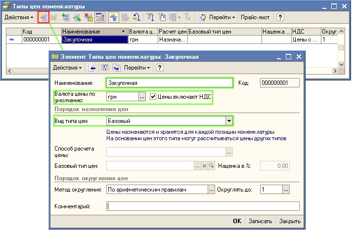
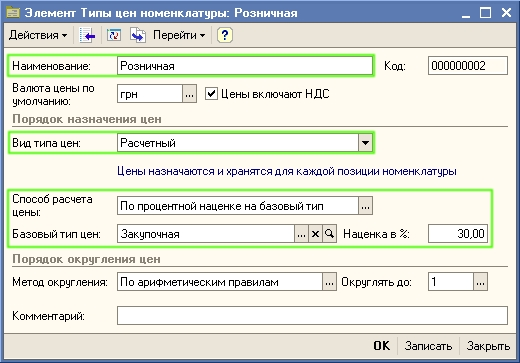
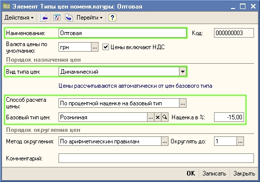
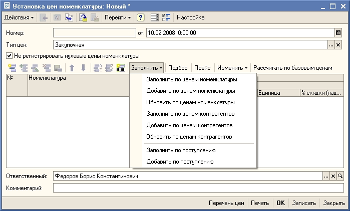
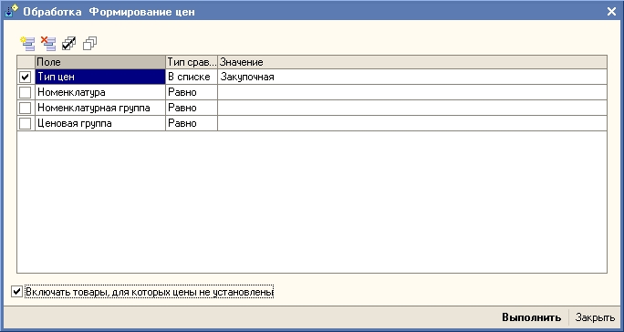
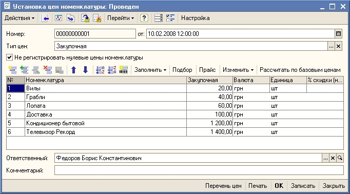
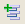
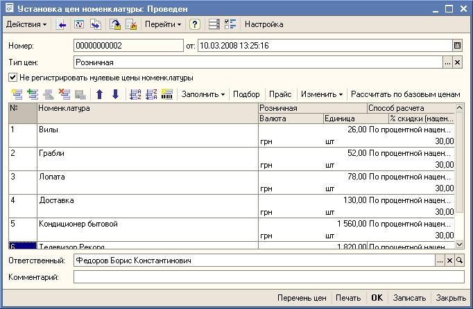
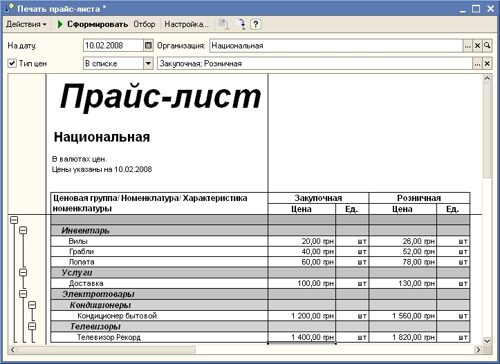

Перед началом оформления торговых операций необходимо назначить цены на товары и услуги.
1. Откройте список Типы цен торгового предприятия.
Для этого в меню Справочники выберите пункт меню Номенклатура, подпункт Типы цен номенклатуры.
2. Введите в справочник Типы цен номенклатуры информацию о закупочной цене, так как это показано на рисунке:

3. Введите информацию о розничной цене. Предполагается , что розничная цена будет рассчитываться на основании закупочной цены с наценкой 30%. Заполните информацию о розничной цене, так как это показано на рисунке:

4. Введите информацию об оптовой цене. Предполагается, что оптовая цена будет рассчитываться на основании розничной цены со скидкой 15%. Информация об оптовой цене будет автоматически меняться при изменении розничной цены.

5. Введите информацию о значениях закупочной цены на товары. Ввод информации о значении цены производится с помощью документа Установка цен номенклатуры. Откройте список документов Установка цен номенклатуры. Для этого в меню Документы выберите пункт меню Ценообразование , затем подменю Установка цен номенклатуры. Откройте форму нового документа для регистрации закупочных цен. Для этого нажмите кнопку  или выберите пункт меню Действия — Добавить в командной панели формы списка. Для добавления нового элемента можно также использовать кнопку INS на клавиатуре.
или выберите пункт меню Действия — Добавить в командной панели формы списка. Для добавления нового элемента можно также использовать кнопку INS на клавиатуре.
6. В новом документе выберите тип цены Закупочная.

7. Для заполнения списка товаров, по которым надо зафиксировать цены, нажмите на кнопку Заполнить - Заполнить по ценам номенклатуры. В появившемся диалоговом окне установите отбор по тем группам номенклатуры, по которым будет вводиться значение закупочных цен, так как это показано на рисунке и нажмите на кнопку Выполнить.

8. Заполните значения закупочных цен, так, как это показано на рисунке и проведите документ нажав на кнопку ОК.

Примечание.
Порядок колонок в документе Установка цен номенклатуры может быть изменен с помощью дополнительного диалогового окна, который вызывается при нажатии на кнопку Настройка.
Внимание.
Документы Установка цен номенклатуры должны быть оформлены датой, более ранней, чем дата оформления первого документа продажи товаров.
Для расчета розничных цен скопируйте введенный ранее документ Установка цен номенклатуры с помощью кнопки

(или нажмите клавишу F9 или выберите пункт меню Действия - Скопировать). Измените в скопированном документе тип цены - розничные, так как это показано на рисунке, и нажмите на кнопку Рассчитать по базовым ценам. Розничные цены будут рассчитаны автоматически в соответствии с закупочной ценой и наценкой.
Примечание. В том случае, если наценки на товары разные, то их можно ввести непосредственно в документе "Установка цен номенклатуры", а потом пересчитать цены, нажав на кнопку "Рассчитать по базовым ценам.
По условиям демонстрационного примера оптовая цена рассчитывается динамически в соответствии с введенной розничной ценой и установленной скидкой. Поэтому для нее не надо вводить отдельный документ Установка цен номенклатуры.
Теперь сформируем прайс-лист торгового предприятия по введенным значениям розничных и оптовых цен. Для формирования прайс-листа выберите пункт меню Справочники, подпункт Номенклатура, а затем подпункт Печать прайс-листа. Установите настройки, так как показано на рисунке и нажмите кнопку Сформировать:

Примечание.
Товары в прайс-листе можно группировать по ценовым группам, то есть группировка в прайс-листе может отличаться от классификатора справочника "Номенклатура". Для группировки по ценовым группам необходимо отнести каждый товар к определенной ценовой группе. Это можно сделать с помощью обработки "Групповая обработка справочников и документов".
Только что Вы научились назначать отпускные цены на товары. Из следующего раздела Вы узнаете, как оформить поступление товаров.